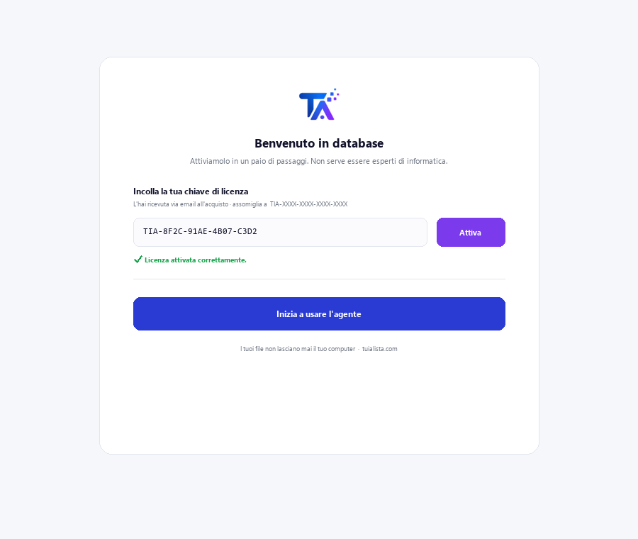
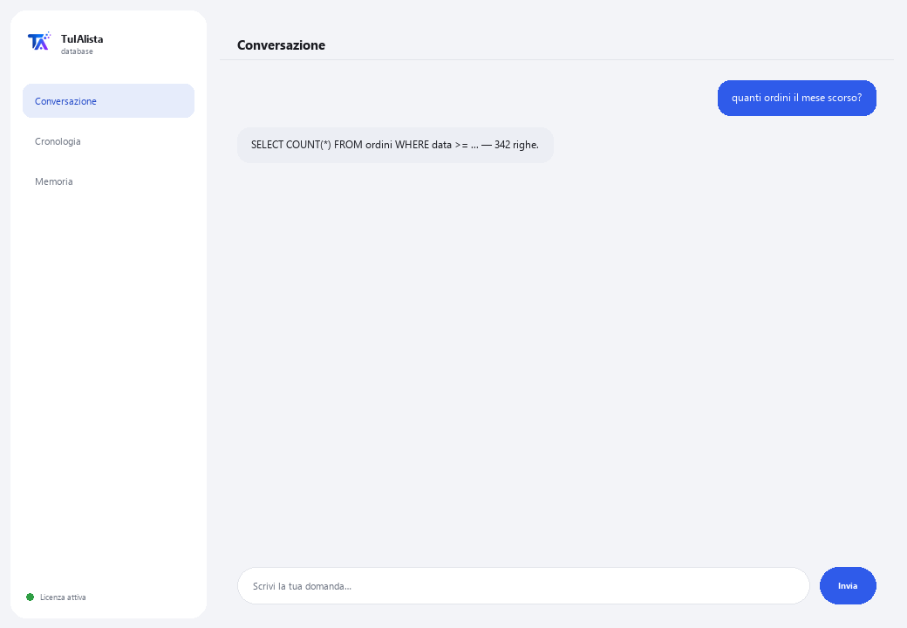

Agente Database
Trasforma le tue domande in query verso il tuo database, senza che tu debba conoscere SQL. Sola lettura: non modifica né danneggia mai i tuoi dati.
Cosa risolve e cosa ti serve?
In molte aziende, i dati importanti vivono in un database, ma solo l'area tecnica sa come interrogarli. Ogni volta che qualcuno ha bisogno di un numero, deve chiedere all'IT di scrivere una query e aspettare. Questo agente traduce la tua domanda nella tua lingua in una query SELECT e ti mostra il risultato — senza rischio di danneggiare nulla.
- Ti serve: la tua chiave di licenza (TIA-XXXX-XXXX-XXXX-XXXX) e i dati di connessione al tuo database (SQLite, PostgreSQL o MySQL). Configurazione tecnica — normalmente eseguita dal tuo reparto IT.
- Primo risultato: installi, attivi la tua licenza, configuri la connessione e chiedi direttamente in linguaggio normale — nessun comando da imparare.
- Il tuo database non lascia mai la tua infrastruttura — la connessione e le query girano in locale.
soporte@tuialista.com o visita tuialista.com/soporte — di solito rispondiamo lo stesso giorno lavorativo.1 Cosa fa questo agente
Gli dici a quale database connettersi e poi gli fai domande in linguaggio normale:
- Traduce la tua domanda in una query SELECT (sola lettura) e la esegue.
- Ti mostra la query SQL che ha generato e il risultato.
- Non esegue mai operazioni che modificano dati (INSERT, UPDATE, DELETE, DROP...): un validatore di sicurezza blocca qualsiasi query che non sia di lettura.
- Funziona con SQLite, PostgreSQL e MySQL (SQLite è pronto all'uso; MySQL e PostgreSQL richiedono l'installazione della loro estensione).
Risultato: qualsiasi persona autorizzata può interrogare i dati senza dipendere dal fatto che l'IT scriva la query, e senza rischio di danneggiare nulla.
2 Installazione
Per Windows. Questo agente ha un passaggio in più rispetto agli agenti che leggono cartelle: la connessione al tuo database si configura a parte.
Scarica l'installer da tuialista.com/descargar (agente Database) e aprilo. Crea un collegamento sul desktop con il logo — non richiede Python né terminale.
Doppio clic sulla nuova icona. Incolla la tua chiave di licenza (ricevuta via email all'acquisto) e premi Attiva. A differenza di altri agenti, non ti chiede di scegliere una cartella — questo agente si connette a un database, non a file locali.
Definisci le variabili d'ambiente TARGET_DB_TYPE (sqlite, postgres o mysql) e TARGET_DB_URL con i dati del tuo database. Per SQLite ti serve solo il percorso al file .db. Questo passaggio viene normalmente eseguito dal reparto IT.

3 Come usarlo
L'agente apre una finestra di chat, come un'app di messaggistica — non è uno schermo nero da programmatore. Nessun comando da memorizzare: scrivi la tua domanda in linguaggio normale nella casella di testo in basso, premi Invia (o Invio), e l'agente genera la query, la esegue e ti mostra l'SQL, le colonne e i risultati:

L'agente fornisce all'IA lo schema delle tue tabelle (nomi di tabelle e colonne) per costruire la query corretta. I dati vengono letti solo quando la query SELECT viene eseguita, ed è limitata a un massimo di 100 righe per risposta. Scrivi esci (o exit) per terminare.
4 Esempi di uso comune
Un conteggio rapido
quanti ordini sono stati fatti il mese scorso?
Un totale con filtro
quanto hanno totalizzato le vendite della regione nord quest'anno?
Una top
dammi i 5 prodotti più venduti per quantità
Un incrocio tra tabelle
quali clienti non hanno fatto nessun ordine negli ultimi 90 giorni? — l'agente costruisce il SELECT con i JOIN necessari secondo il tuo schema e ti mostra il risultato (fino a 100 righe).
5 Domande frequenti
Può danneggiare o cancellare i miei dati?
Quali database supporta?
I miei dati vengono caricati su internet?
Ho bisogno di internet per usarlo?
Perché mi mostra l'SQL generato?
Quanti risultati restituisce?
In quale lingua mi risponde?
Cosa succede se l'agente genera un SQL scorretto?
Posso cambiare database?
Ha bisogno di un utente speciale del database?
6 Risoluzione dei problemi
“Tipo di DB non supportato”
Errore di connessione a MySQL o PostgreSQL
SQLite: “unable to open database file”
“Sono consentite solo query di lettura (SELECT)”
Mostra “Licenza non valida” o chiede di riconnettersi
“Nessun fornitore IA configurato”
Nessuna di queste soluzioni ha risolto il tuo problema? Scrivici direttamente — saremo felici di rivederlo con te.
soporte@tuialista.com o visita tuialista.com/soporte — di solito rispondiamo lo stesso giorno lavorativo.7 Privacy e riservatezza
Il tuo database e i suoi dati non lasciano mai la tua infrastruttura.
- L'agente si connette al tuo database localmente (sul tuo dispositivo o nella tua rete) e vi esegue le query. I risultati non vengono caricati su nessun server.
- Solo lo schema (nomi di tabelle e colonne) e la tua domanda vengono inviati all'IA, per redigere la query SELECT. I dati restituiti dalla query non vengono trasmessi al motore IA.
- L'unica cosa che viaggia su internet è: (1) una verifica che la tua licenza sia attiva, e (2) lo schema + la tua domanda per generare l'SQL.